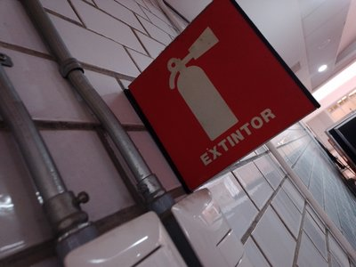
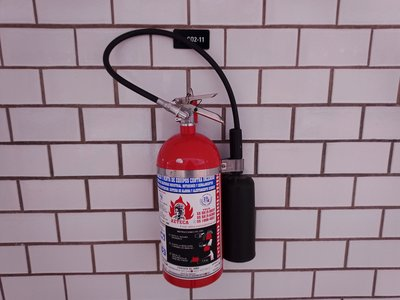
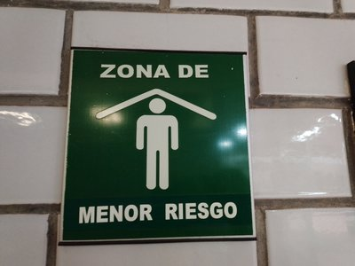
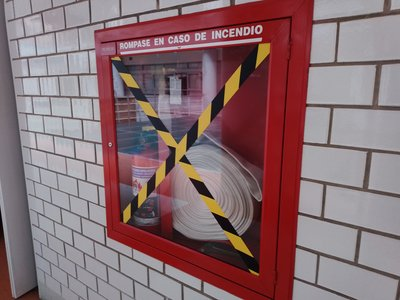
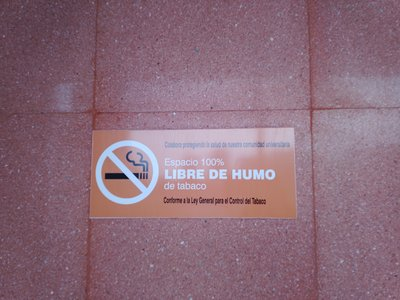
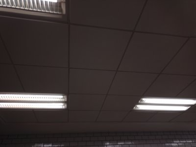

Señalizaciones Éticas

Explora la importancia de las señales éticas y su impacto en diversas áreas en la UAM Cuajimalpa.
Señal de Extintores

Marcador que informa sobre la presencia de un extintor cercano.
Extintores

Ubicación de un extintor para combatir incendios de manera rápida.
Zonas de Menor Riesgo

Señal que delimita un área con menor riesgo o acceso restringido.
En caso de incendio...

Kit de herramientas a utilizar en caso de incendio, contiene un extintor, y manguera para apagar el fuego.
Ruta de Evacuacion

Indica el camino seguro para evacuar en caso de emergencia.
Espacio libre de humo de tabaco

Restricción o advertencia sobre zonas donde está prohibido fumar.
Plafones

Los espacios de la UAM Cuajimalpa estan mayormente compuestos por plafones en los techos, estos no presentan un riesgo en caso de siniestro, sin embargo, es mejor prevenir un accidente en caso de caida de uno.